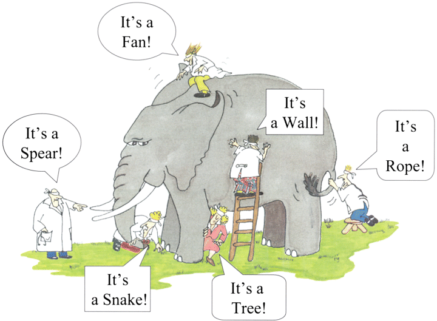

About every other week, I confront popular pluralist notions that have become a large part of the way Americans think. For example, pluralists contend that no one religion can know the fullness of spiritual truth, therefore all religions are valid. But while it is good to acknowledge our limitations, this statement is itself a strong assertion about the nature of spiritual truth. A common analogy is often cited to get the point across which I am sure you have heard - several blind men trying to describe an elephant. One feels the tail and reports that an elephant is thin like a snake. Another feels a leg and claims it is thick like a tree. Another touches its side and reports the elephant is a wall. This is supposed to represent how the various religions only understand part of God, while no one can truly see the whole picture. To claim full knowledge of God, pluralists contend, is arrogance. When I occasionally describe this parable, and I can almost see the people nodding their heads in agreement.
But then I remind the hearers that the only way this parable makes any sense, however, is if the person telling the story has seen the whole elephant. Therefore, the minute one says, 'All religions only see part of the truth,' you are claiming the very knowledge you say no one else has. And they are demonstrating the same spiritual arrogance they so often accuse Christians of. In other words, to say all is relative, is itself a truth statement but dangerous because it uses smoke and mirrors to make itself sound more tolerant than the rest. Most folks who hold this view think they are more enlightened than those who hold to absolutes when in fact they are really just as strong in their belief system as everyone else. I do not think most of these folks are purposefully using trickery or bad motives. This is because they seem to have even convinced themselves of the "truth" of their position, even though they claim "truth" does not exist or at least can't be known. Ironic isn't it? The position is intellectually inconsistent. ⛪
by Timothy J. Keller